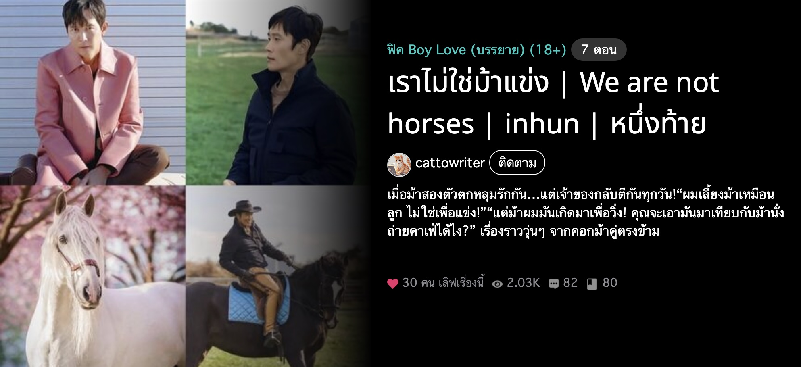
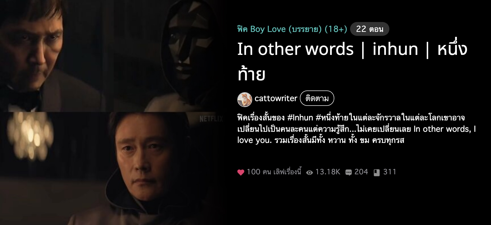
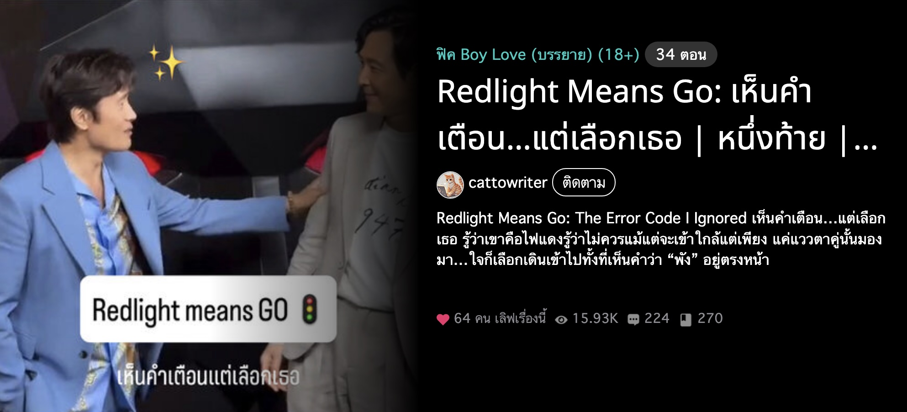
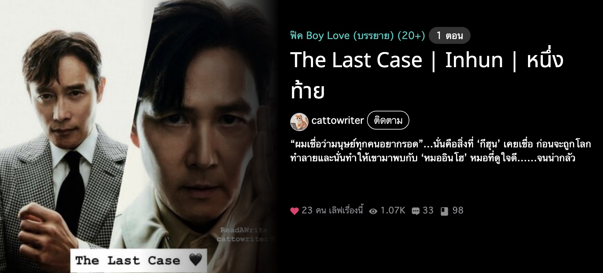

🐴 สรุปผล Fic Interpretation System 🎉
ระบบทำนายว่าคุณน่าจะเหมาะกับฟิคแบบไหนที่สุด by cattowriter 🐱
🏆 ฟิคที่คนโหวตมากที่สุด
💡 กดคลิกเพื่ออ่านพล็อตฟิคกาวทั้ง 16 แบบ
📈 สรุปผลโหวต
✨ ฟิคที่ได้โหวตมากที่สุด
-
🐴 ฟิคที่บัดดี้เลือก
🎓 วัยเรียน + คอมเมดี้
💙 ฟิคที่ Cattowriter🐱 ชอบแต่คนไม่เลือก
🧑💼 ออฟฟิศ + คอมเมดี้
📊 จำนวนฟิค
-
🎯 จำนวนโหวต
-
🐴 Fic Tribute to my Buddy 🦄
🎄🐎 #ซีเครทซานตี้ฮี่กับกับ
บัดดี้โหวตเลือก 'ฟิคม้าแบบ 🎓 วัยเรียน - คอมเมดี้'
📊 สถิติความชอบ
🎭 ตัวละครที่คุณได้รับ
💡 คลิกที่ card เพื่ออ่านข้อมูลเพิ่มเติม
🏆 🦄 กีฮุน
คนสวยขา ขี้วีน ใจอ่อน
รักสัตว์ รักม้า 🐴
🐶 อินโฮ หมาเด็ก
ขี้อ้อน คุณกีฮุนครับๆๆๆ
ผมอยากขี่ม้า 🐴 พาผมไปหน่อย
🐯 อินโฮ พี่เสือ
ขี้เก็ก จีบไม่ดูเวลา
ระวังพี่เสือหลอกไปเล่นกันในคอกม้า 🐴🔥
📊 คุณอยากให้ต่ออะไรมากสุด?
💖 ฟิคที่ชอบที่สุด
💡 วางเมาส์เหนือคำเพื่อดูจำนวน | ✨ คลิกคำเพื่อดู effect พิเศษ!
💬 ข้อความถึง cattowriter 🐱
💡 วางเมาส์เหนือคำเพื่อดูจำนวน | ✨ คลิกคำเพื่อดู effect พิเศษ!
💖 ฝากฟิคกดเลิฟ เพิ่มเข้าชั้น
อ่านเป็นกำลังใจหน่อยนะคับ อิอิ
รู้กันแค่นี้
🎓 วัยเรียน | คอมเมดี้ | แฮปปี้เอนดิ้ง
เราไม่ใช่ม้าแข่ง 🐴
🎓 วัยเรียน | คอมเมดี้ | แฮปปี้เอนดิ้ง
In Other Words
👥 ออฟฟิศ | ดราม่า | แฮปปี้เอนดิ้ง
Redlight Means Go
🦑 Squid Game | ดราม่า | แฮปปี้เอนดิ้ง
The Last Case
✈️ ต่างประเทศ | ดราม่า | แฮปปี้เอนดิ้ง

Interview
👥 ออฟฟิศ | คอมเมดี้ | แฮปปี้เอนดิ้ง